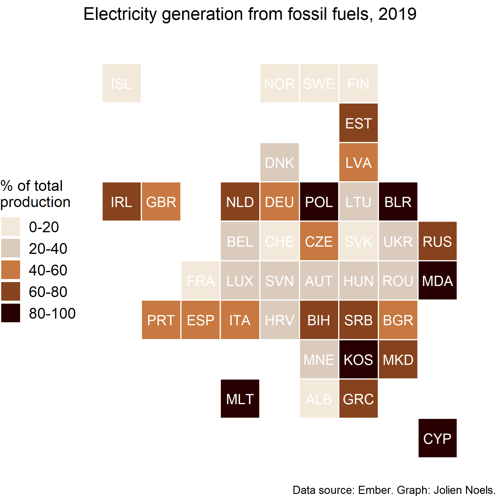

Let’s try it out. JuxtaposeJS is on jsDelivr, so we can just import it! It’s a little stubborn, but requiring the individual file, rather than just the package name, seems to work (thanks, Observable Module Require Debugger!). It produces an error but seems to work, so I just catch the error and ignore it:
And here’s the Juxtapose code! Once the library’s loaded, you can just write it with HTML, as per the README:
::: {.juxtapose data-startingposition="35%" style="margin-bottom:2em"}{data-credit="Fabian Mardi on Unsplash" data-label="Image A by Fabian Mardi on Unsplash"}{data-credit="Weyne Yew on Unsplash" data-label="Image B by Weyne Yew on Unsplash"}:::

Nice! I’ve added a bit of extra margin-bottom to it so that this text clears it properly too.
Source Code
---title: "Electricity generation in G20 countries"author: "Jolien Noels"date: "2023-12-26"categories: [blog, data visualisation]format: html: code-tools: true css: - https://cdn.knightlab.com/libs/juxtapose/latest/css/juxtapose.css---This is a post with executable code.```{r global}library(tidyverse)library(readxl)dir <- here::here("articles/electricity-generation-g20")``````{r }# elec <- read_excel(path = fs::path(dir, "Data-Global-Electricity-Review-2021.xlsx"), skip = 1)# elec <- elec %>% # janitor::clean_names()# elec <- elec %>% # rename(country = area) %>% # mutate(share_of_production_percent = as.numeric(share_of_production_percent))# elec$category <- cut(# elec$share_of_production_percent, # breaks = c(-1, 20, 40, 60, 80, 101), # labels = c("0-20", "20-40", "40-60", "60-80", "80-100") # )#tiles <- read_excel(fs::path(dir, "tilemap_eu_jn.xlsx"))#data <- left_join(elec, tiles, by = c('country'))``````{r graph}# data %>% # filter(# region == "Europe",# year == "2019",# variable == "Fossil"# ) %>% # ggplot(aes(xmin = column, ymin = row, xmax = column + 1, ymax = row + 1)) +# geom_rect(aes(fill = category), colour = "white") +# geom_text(# aes(x = column, y = row + 1, label = iso3), # color = "white", nudge_x = 0.5, nudge_y = 0.5, size = 4# ) + # scale_y_reverse() +# scale_fill_manual(values = c("#F3E9DA","#dbcbbd","#c87941","#87431d","#290001")) +# labs(# fill = "% of total\nproduction",# caption = "Data source: Ember. Graph: Jolien Noels.",# title = "Electricity generation from fossil fuels, 2019"# ) +# theme_void() +# theme(# legend.position = "left",# legend.text = element_text(size = 12),# legend.title = element_text(size = 12),# plot.title = element_text(size = 14, hjust = 0),# plot.background = element_rect(fill = "white", colour = "white")# ) ```## Step 1: add the CSS to the frontmatterYour YAML frontmatter should include the library's CSS (note how the examples on its GitHub README include a `<link rel="stylesheet">` tag!):```yamlcss:-https://cdn.knightlab.com/libs/juxtapose/latest/css/juxtapose.css```## Step 2: Importing the moduleLet's try it out. JuxtaposeJS is on [jsDelivr](https://www.jsdelivr.com), so we can just import it! It's a little stubborn, but requiring the individual file, rather than just the package name, seems to work (thanks, [Observable Module Require Debugger](https://observablehq.com/@observablehq/module-require-debugger)!). It produces an error but seems to work, so I just `catch` the error and ignore it:```{ojs}//| output: falserequire("https://cdn.jsdelivr.net/npm/juxtaposejs@1.1.6/build/js/juxtapose.min.js").catch(() =>null)```## Step 3: Write the Juxtapose!And here's the Juxtapose code! Once the library's loaded, you can just write it with HTML, [as per the README](https://github.com/NUKnightLab/juxtapose#html-implementation):```markdown::: {.juxtapose data-startingposition="35%" style="margin-bottom:2em"}{data-credit="Fabian Mardi on Unsplash" data-label="Image A by Fabian Mardi on Unsplash"}{data-credit="Weyne Yew on Unsplash" data-label="Image B by Weyne Yew on Unsplash"}:::```::: {.juxtapose data-startingposition="35%" style="margin-bottom:2em"}{}{data-credit="Weyne Yew on Unsplash" data-label="Image B by Weyne Yew on Unsplash"}:::Nice! I've added a bit of extra `margin-bottom` to it so that this text clears it properly too.